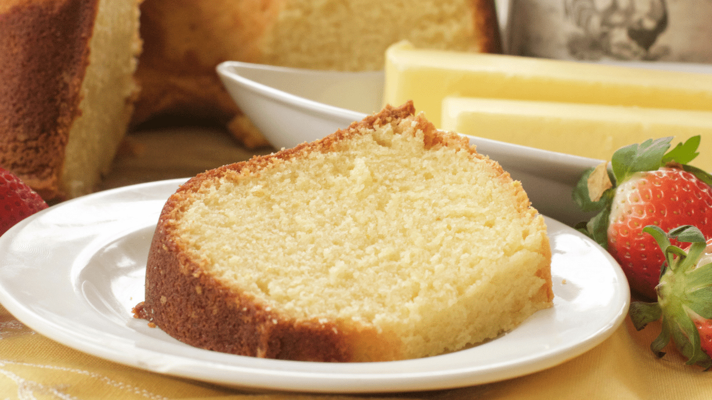

Southern Butter Pound Cake
Southern Butter Pound Cake is a rich, buttery classic with a golden crust and a tender, moist crumb. Baked with simple, comforting ingredients, every slice offers a smooth vanilla flavor and melt-in-your-mouth texture. Delicious on its own or served with fresh berries, whipped cream, or a warm glaze.
Ingredints
Pound Cake
- all-purpose flour
- baking powder
- salt
- unsalted butter, room temperature
- butter-flavored shortening
- granulated sugar
- eggs, room temperature
- egg yolks, room temperature
- vanilla extract
- lemon extract
- natural butter flavoring, or butter extract (optional, but it enhances the buttery taste)
- whole milk, room temperature
- whole milk, room temperature
- 1 cup sifted powdered sugar
- 2–3 tablespoons milk or heavy cream
- Pinch of salt (optional for balance)
Glaze
Steps
Pound Cake
- Preheat oven to 325 ° F. Grease and flour a bundt pan. Set aside.
- In a large bowl, whisk together flour, baking powder, and salt. Set aside.
- In a large bowl, cream together butter, shortening, and sugar for 3 minutes.
- Mix in eggs, one at a time, mixing thoroughly after each egg.
- Mix in egg yolks.
- Mix in vanilla extract, lemon extract, and butter flavoring or butter extract (if using)
- Add dry ingredients to wet ingredients, alternating with the milk and buttermilk.
- Mix until the batter is fluffy.
- Spoon batter into prepared pan and tap the pan on the counter to even out the top and release any air bubbles.
- Bake for 1 hour and 20 mins. (Check it at the 1-hour mark. Do not over-bake as the cake will continue to cook as it cools)
- Remove from the oven and let the cake sit in the pan for about 10 minutes.
- Then remove from the pan and place on a cooling rack to finish cooling.
- Slice and serve!
- Sift the powdered sugar into a bowl to remove lumps.
- Add milk and vanilla and whisk until smooth and glossy. Start with 2 tablespoons of liquid and add more, a teaspoon at a time, until the glaze is thick but pourable
- Cool the pound cake completely before glazing to prevent the glaze from running off
- Pour the glaze over the cake, letting it drip naturally down the sides. For a thicker coat, allow the first layer to set for 20 minutes, then apply a second layer